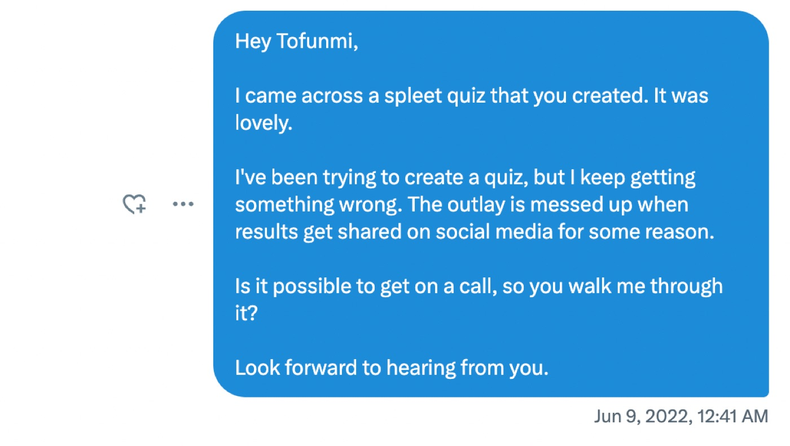
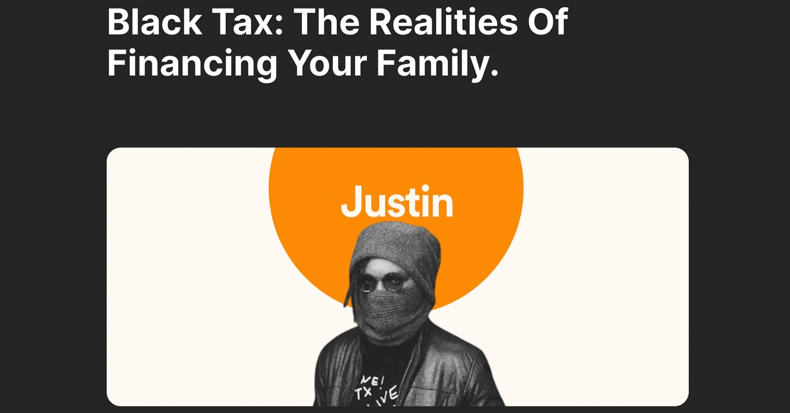

How I’ve Learned to Build by Trying Everything
When I wrote about how we got our first 1,000 users at Accrue, I ended with one of the biggest lessons from that phase: start with what you have. But even after that milestone, the truth is, I still didn’t know what I was doing half the time.
When we first started Accrue, I didn’t have much experience in fintech. I had only been working at Helicarrier for a few months before we began building the MVP, and I was just starting to fall in love with marketing. I didn’t have a wealth of experience to draw from, and that came with a lot of confusion and imposter syndrome.
In those early days, it was just me and my co-founders, Clinton and Zino, trying different things and hoping something would work.
At the time, I used to tell myself that if I ever managed to grow Accrue to 100,000 users, that would be success. Back then, it felt like such an impossible dream. Today, Accrue has over 300,000 users, and looking back, it wasn’t because we always knew what we were doing — it was because we ran a lot of experiments.
Here are a few of the marketing experiments I tried:
The “Invest Like” Experiment
When Accrue started, it was primarily a dollar-cost-averaging app for stocks and cryptocurrencies. One day, while reading startup stories and looking for growth ideas, I thought: what if people could invest like the people they admire?
So I started reaching out to popular people on Twitter, asking what they were investing in and if we could display their portfolios on our app. Some declined, which was fine, but others — like Adora, who’s well-known in the tech space — were kind enough to say yes without even asking for payment. We couldn’t afford to pay anyone, so their kindness meant the world to me.
We built a feature called “Invest Like.” It allowed users to see cards like “Invest Like Adora,” “Invest Like Clinton,” or “Invest Like Adesuwa,” each showing the top five assets those people were investing in. Users could tap one and immediately deposit and start investing in similar assets.
People loved it. It created aspiration — the feeling that if they admired someone, they could now invest like them too. They started sharing those portfolios on Twitter, tagging us, and their followers clicked through, downloaded the app, and started investing as well.
It was simple, almost silly, but it worked. And it cost us nothing.
The Quiz Experiment
Around this time, I came across a quiz that Spleet had created using a tool called Involve.me. I was fascinated by how many people were taking and sharing it. I wanted to try something similar for Accrue, but I had no idea how to use the tool.
So I reached out to Tofunmi on Twitter because I found out she was really good with Involve.me. I can’t remember how I found out that she was the one who did the Spleet quiz, and we had never spoken before, but I was happy to try my luck. She got on a call and taught me how to do it. I spent almost two days building my first quiz, confused most of the time, but when it finally went live, it worked beautifully.

I started doing weekly quizzes like “How financially intelligent are you?” and “What kind of saver are you?” Each quiz had a shareable result card and a $10 giveaway (only one person could win each week). People shared their results on Twitter, and more people saw them, leading to an increase in the number who took the quiz.
Every Friday — quiz day — our traffic spiked. Website visits tripled. Signups grew. Followers increased because people wanted to know if they’d win (thankfully, most of those who didn’t win forgot to unfollow us). And all of this came from a free quiz and a $10 prize. I remember always looking forward to Fridays because even if signups had been slow all week, I knew we’d see a big spike that day.
We still do those quizzes, and they remain one of our best-performing experiments.
The Instagram Hack
For a while, our Instagram page refused to grow, no matter what we tried. Then Mercy, who was on our customer support team, suggested something simple but brilliant.
After new users signed up and completed KYC, before showing them the main dashboard, we added a short “We’re verifying your profile” page with a message inviting them to connect with us on Instagram while they waited.
It worked immediately. People followed us while waiting, and our Instagram started growing again. That one small idea from Mercy made a huge difference.
Twitter Spaces
We also began hosting weekly Twitter Spaces where we discussed relatable money topics — things like Black Tax, how to grow your income, and how people manage their finances across different countries.

At first, I was so nervous about hosting the sessions, but I later eased into it. I remember one of my favourite Spaces was with Justin Irabor, where we discussed Black Tax. It went so well that we later turned it into a blog post and an Instagram carousel. Those Spaces became a steady source of new followers and app signups, and they helped us build a community, not just a user base.
Nudge Marketing
I had just started learning about nudge marketing after seeing a tweet by someone called Ized on Twitter, and as usual, I began thinking about how we could apply it at Accrue.
A few ideas came to mind, but one worked well:
Every week, we sent users a brief update highlighting the top-performing cryptocurrencies and stocks from the previous week. Nothing pushy — we didn’t tell people what to buy, we just shared data.
What we noticed was fascinating. Every Monday after those updates went out, app activity spiked. People opened the app more, made deposits, and invested in the assets that had done well the week before.
It worked because it was subtle. Users don’t always like being told what to do, but they appreciate a small nudge that helps them make decisions faster. This simple weekly update quietly became one of our strongest growth levers at the time.
Savings Competitions
When the bear market hit, interest in investing dropped drastically. People weren’t as eager to buy crypto or stocks anymore, and we had to rethink how to keep users engaged.
So, we introduced dollar savings to the app. It allowed people to save in dollars directly, but then came the next challenge: how do we get people to actually use it?
That’s how the Savings Competition idea was born.
We decided to make saving fun by turning it into a friendly contest. One time, we ran a competition between men and women. Each team had a leader, and for three months, they competed to see who could save the most.
Every week, we posted updates on Twitter: who was leading, who was catching up, and how much each team had saved. The conversations that followed were hilarious and surprisingly effective(we even ended up getting dragged on Twitter by some angry people). If women were leading, the men would rush to top up their savings. If men took the lead, the women would rally back. It evolved into a lighthearted, community-driven challenge that encouraged people to use the app consistently.
And the best part? It didn’t cost us much. It just required creativity, a little coordination, and consistent updates. Yet it drove engagement on Twitter, made users feel part of something, and deepened their relationship with the app.
Looking Back
Of course, not every experiment was a success. There were many ideas that completely flopped — things I was so sure would work but didn’t move the needle at all. But I learned that most experiments won’t work. A few will. And those few can change everything.
Hitting our first 100,000 users felt surreal. I remember staring at the numbers, hardly believing it. It was a personal milestone; a reminder that what once felt impossible was actually happening.
Turns out, most of the people I admire for doing great work are just figuring things out too. So wear your figure-outer badge proudly. Keep experimenting, learning, and refining. Your instincts will sharpen with time(and lots of experiments).
Startups are scrappy. Most times, you won’t know exactly what will work, so be ready to experiment a lot. The good thing is, not every experiment costs money. Some of the best ideas are free or very cheap to try. So don’t feel discouraged if you don’t have a big marketing budget early on. Focus on testing, learning, and experimenting. You never know what might click.
One of my favourite quotes is, “People are a gift, let them happen to you.” I’ve shared how I reached out to so many people for help. Some said no, and that was fine. However, the ones who said yes were incredibly kind, and their help made a significant difference in our growth.
There are few questions as empowering as, “What’s the worst that can happen?” So reach out to random smart people on the internet, ask for help, and don’t let fear or shyness hold you back. What’s the worst that can happen?